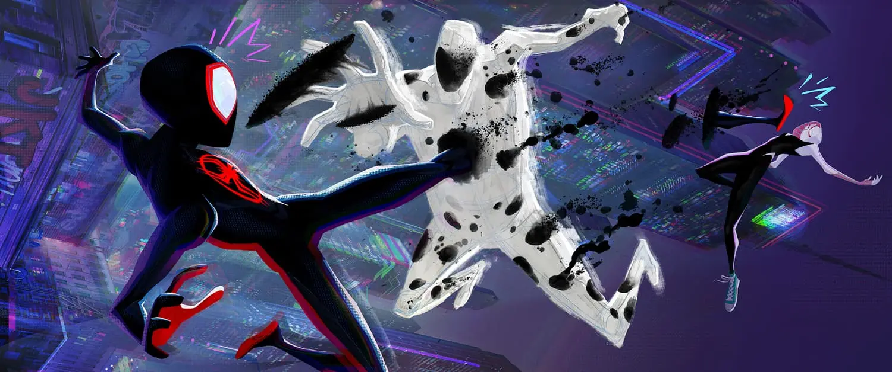
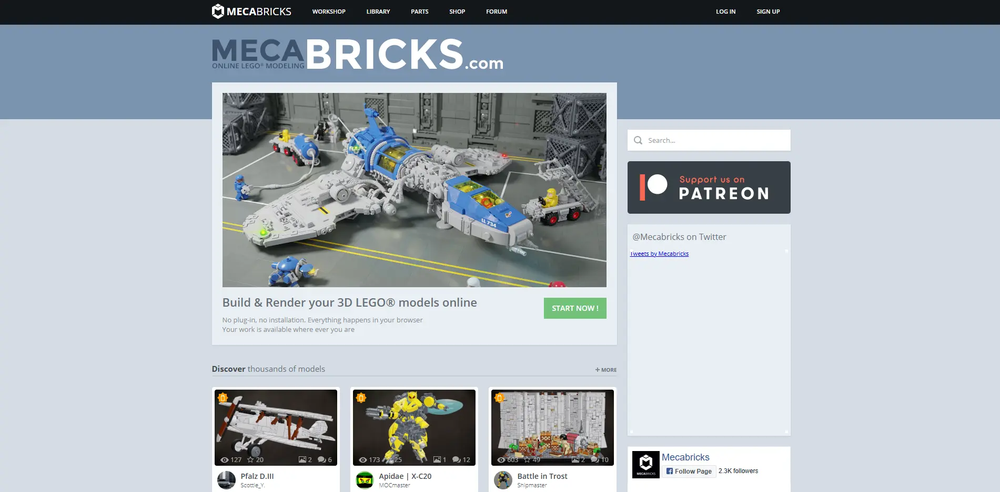

This project was my submission for the massive Boss Fight 3D community challenge hosted by Pwnisher. The prompt was to create a boss fight scene using a provided template, and I decided to take a unique stylistic approach.
You can see my submission in the official challenge compilation video here. (timestamp 3:28:39)
The Story
The animation depicts a chaotic battle where several Spider-People are trapped by the villain The Spot. Spider-Punk creates a distraction by tossing his guitar, which another Spider-Man catches mid-air and hurls at The Spot, momentarily stunning him. Amidst the chaos, Gwen launches herself to rescue Miles and Spider-Man 2099, who is nearly consumed by a portal. The scene features cameos from Spider-Cat, Stealth Suit Spider-Man, Peter B. Parker with Mayday, and even Ben Reilly's leg dangling from a portal. Will they manage to win?
Concept & Inspiration
Inspired by the groundbreaking visual style of Spider-Man: Across the Spider-Verse, I created a Lego animation. The goal was to capture the stop-motion feel of Lego movies while maintaining the dynamic action of the Spider-Verse. The Lego build for The Spot was inspired by a real Lego creation by themarkstudios_84.

Technical Details
The scene was created in Blender 3.5. To achieve the authentic Lego look, I focused on:
- Rigid movement: Limiting character rotations to what is physically possible with Lego minifigures.
- Framerate: The project runs at 24fps, but some characters were animated on "twos" to mimic the Spider-Verse movies.
- Assets: All characters and Lego parts were created using Mecabricks.
- VFX: The moving background and particles were generated using Blender's
particle simulator.
